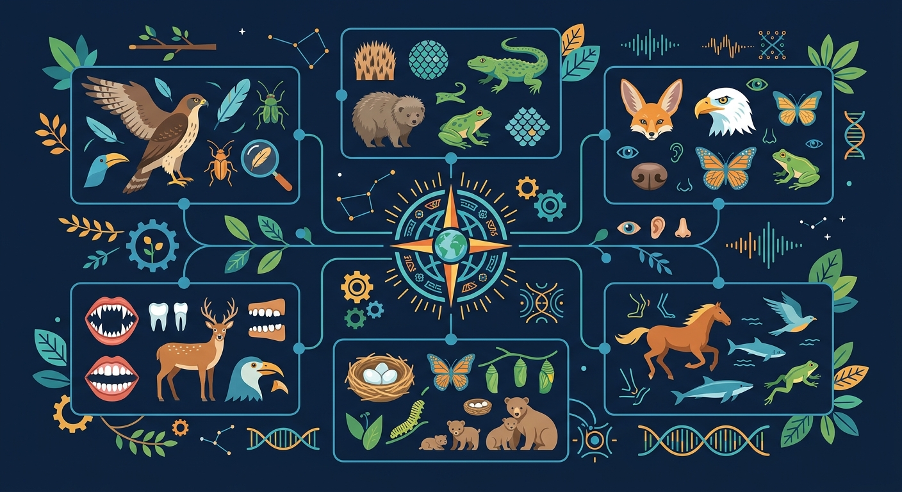

观察动物的身体，发现它们适应环境的秘密

🎯 能说出5种以上动物体表覆盖物的功能
🎯 能根据牙齿类型判断动物的食性
🎯 能分析3种动物运动方式与栖息地的关系
用 ABT 叙事框架，带你进入动物世界的秘密
小明去动物园，看见了毛茸茸的狗、羽毛鲜艳的鹦鹉、全身鳞片的蛇，还有光滑皮肤的青蛙。它们都是动物，都有眼睛和嘴巴，都需要吃东西和呼吸……
但是，为什么它们的身体看起来完全不同？狗有毛，鸟有羽毛，鱼有鳞片，青蛙皮肤光滑——同样是动物，身体表面为什么差别这么大？
所以，今天我们要研究：动物的外形特征——体表覆盖物、运动方式、栖息地和食性。通过观察外形，我们就能猜出一种动物的生活方式！
❓ 为什么北极熊不怕冷？
❓ 鱼为什么能在水里呼吸？
❓ 蜘蛛和昆虫都有8条腿吗？
学完这一课，这些问题你都能自信地回答。
下列哪种动物体表覆盖物与其他不同？
最适合挖洞的爪型是？
不同动物身体表面各不相同，各有作用
哺乳动物的保护层。保暖柔软，触感舒适，还能感知外界触觉。
鸟类专属。轻盈防水，帮助飞翔，还能保持体温恒定。
鱼类和爬行类的铠甲。防水灵活，保护身体，减少水中阻力。
两栖类的特征。皮肤可以辅助呼吸，需要保持湿润才能正常生活。
身体结构决定运动方式
用四肢在地面行走或快速奔跑
用翅膀拍打空气，在空中飞行
用鳍或四肢在水中游动
没有腿，靠扭动身体贴地移动
靠强壮的后腿弹射，弹跳式移动
不同动物生活在不同的环境中
在地面上生活，用四肢行走
在水里生活，用鳍或四肢游泳
在天空中飞行，用翅膀扇动
既能在水里游，又能在陆地上生活
牙齿形状暗示食性秘密
只吃植物，牙齿宽平，适合研磨草料。通常有较长的消化系统。
只吃其他动物，牙齿尖锐，用于撕裂猎物。眼睛朝前，方便判断距离。
既吃植物又吃动物，牙齿多样，适应能力最强。
用视频再次回顾动物外形特征的四大要素
选择一种动物，查看它的特征雷达图
点击动物按钮，在雷达图上查看其体表/运动/食性/栖息地特征评分
将下方动物卡片拖入对应的栖息地区域
拖动动物到正确的栖息地区域（陆地 / 水中 / 空中）